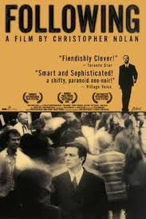

Video Section
Audio Section
Video Section
YouTube Section
Resources Section
Music Section
Lyrics Section
Player 1
Player 2
Player 3
Player 4

Movie Name : Following
Release Year : 1998
Director : Christopher Nolan
Musician : David Julyan